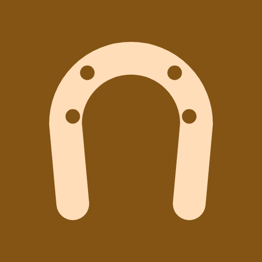

Apps by Gerrit Schimpf
- Ad-Free Storage AnalyzerFind large files, duplicates and old junk. No ads, no internet permission.
- Binaural BeatsBinaural and isochronic beats to relax, focus or sleep. No ads, fully offline.
- Der MonarchTurn-based economic strategy in 1720s Germany: rise from reeve to emperor.
- GLP Mate: GLP-1 Shot TrackerPrivate diary for GLP-1 shots, side effects, weight, food and supply.
- Hipoteca: Mortgage CalculatorPlan, compare and track a Spanish mortgage: costs, taxes and Euríbor risk.

Horse Care Log: Farrier & VetOffline horse care log: farrier, vaccines, worming, vet notes, costs, reminders.- Minijob Calculator OfflineGerman Minijob limit, hours and employer cost 2026/2027. Offline, no account.
- PDF Reader & Scanner: OfflineRead, search and scan PDFs fully offline. No ads, no internet permission.
 Pizza Calc: Dough CalculatorPizza dough in grams: 16 styles, yeast for any schedule, preferments. Offline.
Pizza Calc: Dough CalculatorPizza dough in grams: 16 styles, yeast for any schedule, preferments. Offline.